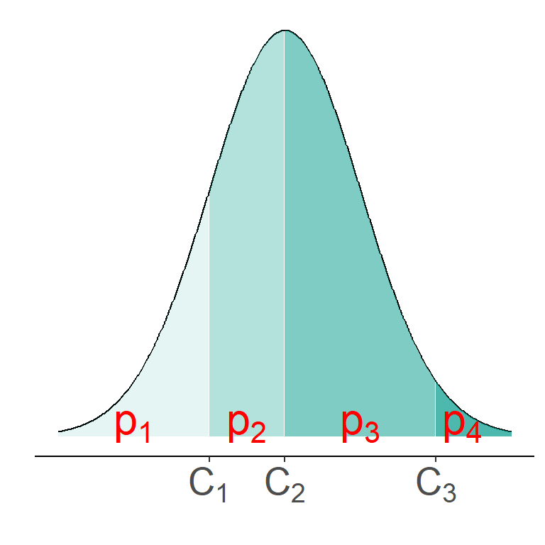
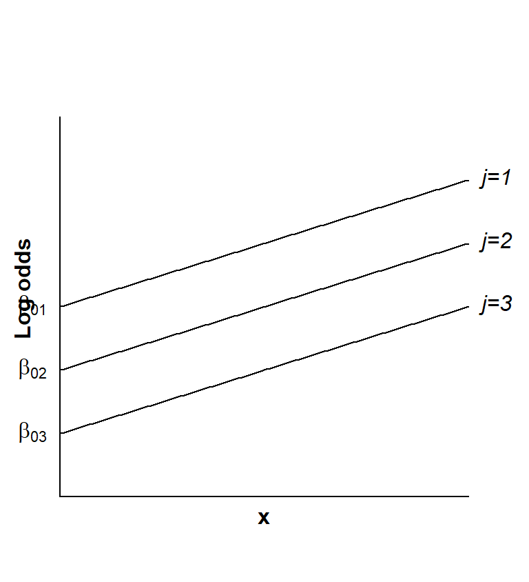

Week 8: Extra material
1 Ordinal logistic regression
In the car preferences example there was a natural ordering among the response categories for the importance of power steering and air conditioning when buying a car: “no/little importance”, “important”, “very important”. This ordering can be taken into account in the model specification. Such ordering often arises in market research, opinion polls and questionnaires (e.g. student feedback at the University of Glasgow).
1.1 Latent variable view of ordered responses
Sometimes an ordinal response could arise if there is a continuous variable \(Z\), such as severity of disease, which is hard to measure. \(Z\) is a latent variable, because it cannot be observed directly. Instead, cutpoints \(C_j\) are identified so that, for instance, patients have “no disease”, “mild disease”, “moderate disease” or “severe disease” corresponding to values of \(Z\) from low to high. \(C_1, \dots, C_{J-1}\) identify \(J\) ordered categories with associated probabilities \(p_1,p_2,\dots, p_J\). An example of the continuous distribution of \(Z\) with cutpoints for four categories is shown below. Here, four discrete responses can occur depending on the position of \(Z\) relative to the cutpoints \(C_j\).
1.2 Proportional odds logistic regression model
There are several ways in which to model logits involving the probabilities \(p_j\). The most commonly used model is the proportional odds logistic regression model. If the linear predictor \(\boldsymbol{x}^\intercal \boldsymbol{\beta}_j\) has an intercept term \(\beta_{0j}\) which depends on category \(j\), but the other explanatory variables do not depend on \(j\), then the model is
\[ \log \left(\frac{p_1+p_2+\dots+p_j}{p_{j+1}+\dots+p_J}\right)=\beta_{0j}+\beta_1 x_1 + \dots + \beta_{p-1}x_{p-1}. \]
This is called the proportional odds model and is based on the assumption that the effects of the covariates \(x_1,\dots, x_{p-1}\) are the same for all categories on the logarithmic scale, as illustrated in the figure below.

Note
Some alternatives to the proportional odds model for ordinal responses are given below.
- Cumulative logit model
The cumulative odds for the \(j\)th category are \[\frac{\Pr(Z\leq C_j)}{\Pr(Z>C_j)}=\frac{p_1+p_2+\dots+p_j}{p_{j+1}+\dots+p_J}\] The cumulative logit model is \[\log \left(\frac{p_1+p_2+\dots+p_j}{p_{j+1}+\dots+p_J}\right)=\boldsymbol{x}^\intercal \boldsymbol{\beta}_j.\]
- Adjacent categories logit model
If we consider ratios of probabilities, e.g. \(\frac{p_1}{p_2}, \frac{p_2}{p_3},\dots, \frac{p_{J-1}}{p_J}\) we can define the adjacent category logit model as
\[ \log \left(\frac{p_j}{p_{j+1}}\right)=\boldsymbol{x}^\intercal \boldsymbol{\beta}_j, \hspace{1cm} \text{for } j=1,\dots,J-1. \]
If this is simplified to
\[ \log \left(\frac{p_j}{p_{j+1}}\right)=\beta_{0j}+\beta_1 x_1 + \dots + \beta_{p-1}x_{p-1}, \]
the effect of each explanatory variable is assumed to be the same for all adjacent pairs of categories.
- Continuation ratio logit model
Another alternative is to consider the ratios of probabilities \(\frac{p_1}{p_2}, \frac{p_1+p_2}{p_3},\dots, \frac{p_1+\dots+p_{J-1}}{p_J}\) or \(\frac{p_1}{p_2+\dots+p_J}, \frac{p_2}{p_3+\dots+p_J},\dots, \frac{p_{J-1}}{p_J}\).
The equation
\[ \log \left(\frac{p_j}{p_{j+1}+\dots+p_J}\right)=\boldsymbol{x}^\intercal \boldsymbol{\beta}_j \]
models the odds of the response being in category \(j\), i.e. \(C_{j-1}<Z\leq C_j\) conditional upon \(Z>C_{j-1}\).
For instance, in the car preferences data example we could estimate the odds of respondents regarding air conditioning and power steering as “unimportant” vs. “important” or “very important” using \[\log \left(\frac{p_1}{p_2+p_3}\right).\]
Similarly, the odds of these features being “very important” given that they are “important” or “very important” can be estimated by \[\log \left(\frac{p_2}{p_3}\right).\]
2 Proportional odds logistic regression model for the car preference data
Looking at the car preference example again, we can fit the response as an ordinal variable using a proportional odds model of the form:
\[ \log \left(\frac {p_1} {p_2+p_3} \right)= \beta_{01} + \beta_{1}x_1 + \beta_{2}x_2 +\beta_{3}x_3 \tag{1}\]
\[ \log \left(\frac {p_1+p_2} {p_3}\right) = \beta_{02} + \beta_{1}x_1 + \beta_{2}x_2 +\beta_{3}x_3 \tag{2}\]
where \(j=1\) for no/little importance (also referred to as “unimportant”), \(j=2\) for important and \(j=3\) for very important, \(x_1 =1\) for women and 0 for men, \(x_2 = 1\) for age 24-40 years and 0 otherwise and \(x_3 = 1\) for age \(> 40\) and 0 otherwise.
We fit this model using the polr() function in library(MASS), which, incidentally, uses the parameterisation
\[ \log \left(\frac {p_1} {p_2+p_3} \right)= \beta_{01} - \beta_{1}x_1 - \beta_{2}x_2 -\beta_{3}x_3 \tag{3}\]
\[ \log \left(\frac {p_1+p_2} {p_3}\right) = \beta_{02} - \beta_{1}x_1 - \beta_{2}x_2 -\beta_{3}x_3 \tag{4}\]
instead of Equation 1 and Equation 2
library(MASS)
m4 <- polr(response ~ sex + age, data= dcars, weight = frequency, Hess=TRUE)
summary(m4)Call:
polr(formula = response ~ sex + age, data = dcars, weights = frequency,
Hess = TRUE)
Coefficients:
Value Std. Error t value
sexwomen 0.5762 0.2262 2.548
age24-40 1.1471 0.2776 4.132
age> 40 2.2325 0.2915 7.659
Intercepts:
Value Std. Error t value
no/little|important 0.6198 0.2168 2.8588
important|very important 2.2312 0.2546 8.7625
Residual Deviance: 581.2956
AIC: 591.2956 The intercepts correspond to the \(j\)th category, so the log odds of considering the features “unimportant” is 0.620 corresponding to a probability of 0.65 for men age 18-23. The log odds of considering the features “unimportant” or “important” is 2.231 corresponding to a probability of 0.903, giving a probability of 0.253 of considering the features “important”. This leaves a probability of 0.097 of considering the features “very important” for men age 18-23. These probabilities are calculated using equations (Equation 3) and (Equation 4) together with \(p_1+p_2+p_3=1\). For instance for men age 18-23 (baseline) we get \[\hat{p}_1=\frac{\exp(\hat{\beta}_{01})}{1+\exp(\hat{\beta}_{01})}=\frac{\exp(0.6198)}{1+\exp(0.6198)}=0.650\] and \[\hat{p}_3=\frac{1}{1+\exp(\hat{\beta}_{02})}=\frac{1}{1+\exp(2.2312)}=0.097.\]
The likelihood ratio chi-squared statistic for the proportional odds model is 77.25, and the AIC is 591.3, both very similar to those obtained from the corresponding nominal logistic regression model (77.84 and 596.70 respectively). There is little difference in how well the proportional odds and nominal logistic regression models describe the data.
More examples and details on GLMs for nominal and ordinal data can be found in
Chapter 5 from Extending linear models with R: generalized linear, mixed effects and nonparametric regression models by Julian Faraway and in
Chapter 6 of Regression: models, methods and applications by Fahrmeir et al.
R examples are also available from UCLA’s Institute for Digital Research and Education: